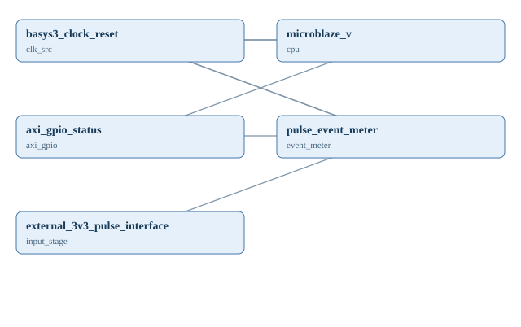

CAPSTONE / instrument_pulse_counter
FPGA SoC 캡스톤 — 펄스·회전수 계측 주변장치
Basys3 100MHz 클럭에서 2-FF 동기화 및 1초 이벤트 계측을 수행하는 독립 RTL. MicroBlaze V + AXI GPIO 읽기 포트로 확장하는 SoC 설계안이며 Vivado Block Design과 보드 실험은 미완료입니다.

1. 전체 시스템 구조도
모듈·신호의 논리적 연결을 표시합니다. FPGA 외부 전기회로도나 실제 보드 핀 배선도는 아닙니다.

모듈별 입출력
| 모듈 ID | 모듈명 | 입력 | 출력 |
|---|---|---|---|
| clk_src | basys3_clock_reset | clk, rst | |
| cpu | microblaze_v | clk, reset | m_axi |
| axi_gpio | axi_gpio_status | s_axi, gpio_io_i | |
| event_meter | pulse_event_meter | clk, rst, pulse_in | event_count, sample_valid |
| input_stage | external_3v3_pulse_interface | pulse_out |
2. 신호 연결표
| 송신 포트 | 수신 포트 | 설계 및 검증 조건 |
|---|---|---|
| clk_src.clk | cpu.clk | Conceptual 100MHz clock, IP/clocking not yet built |
| clk_src.rst | cpu.reset | Actual reset polarity must match CPU IP |
| clk_src.clk | event_meter.clk | Single domain |
| clk_src.rst | event_meter.rst | Synchronous active-high reset |
| cpu.m_axi | axi_gpio.s_axi | AXI interconnect omitted in this conceptual view |
| event_meter.event_count | axi_gpio.gpio_io_i | 32-bit GPIO input; AXI address from Vitis BSP, not guessed |
| input_stage.pulse_out | event_meter.pulse_in | 3.3V-conditioned asynchronous pulse, synchronized internally |
3. 하드웨어 구성·부품
| 부품 | 수량 | 신호·전원 | 확인 사항 |
|---|---|---|---|
| Basys3 | 1 | 3.3V I/O 100MHz | Official XDC must be checked |
| 3.3V pulse generator or isolated conditioned sensor | 1 | digital pulse | No direct 5V/12V connection |
4. 실행소스 전체 보기
코드 원본은 보존합니다. 아래에서 펼쳐 읽거나 파일별로 열 수 있습니다. 전체 소스 ZIP 받기
rtl/pulse_event_meter.v
// Original reusable RTL: count synchronized rising edges per window.
// For FPGA use, pulse_in must be electrically level conditioned to 3.3V.
// Outputs update only on posedge clk; sample_valid is a one-clock strobe.
module pulse_event_meter #(
parameter integer WINDOW_CYCLES = 100_000_000
)(
input wire clk,
input wire rst,
input wire pulse_in,
output reg [31:0] event_count,
output reg sample_valid
);
localparam integer CW = WINDOW_CYCLES > 1 ? $clog2(WINDOW_CYCLES) : 1;
reg [CW-1:0] timer;
reg [31:0] accum;
reg sync0, sync1, sync_prev;
wire pulse_rise = sync1 && !sync_prev;
always @(posedge clk) begin
if (rst) begin
timer <= 0;
accum <= 0;
event_count <= 0;
sample_valid <= 0;
sync0 <= 0;
sync1 <= 0;
sync_prev <= 0;
end else begin
sync0 <= pulse_in;
sync1 <= sync0;
sync_prev <= sync1;
sample_valid <= 0;
if (timer == WINDOW_CYCLES - 1) begin
timer <= 0;
// Include the sample arriving on the snapshot boundary.
event_count <= accum + pulse_rise;
accum <= 0;
sample_valid <= 1;
end else begin
timer <= timer + 1'b1;
if (pulse_rise) accum <= accum + 1'b1;
end
end
end
endmodule
tb/tb_pulse_event_meter.v
`timescale 1ns/1ps
// Simulation-only self-checking testbench. 64 cycles is one test window.
module tb_pulse_event_meter;
reg clk=0;
always #5 clk=~clk;
reg rst=1;
reg pulse_in=0;
wire [31:0] event_count;
wire sample_valid;
pulse_event_meter #(.WINDOW_CYCLES(64)) dut (
.clk(clk), .rst(rst), .pulse_in(pulse_in),
.event_count(event_count), .sample_valid(sample_valid)
);
task send_pulse;
begin
@(negedge clk); pulse_in=1;
repeat (4) @(negedge clk);
pulse_in=0;
repeat (5) @(negedge clk);
end
endtask
initial begin
repeat (4) @(negedge clk);
rst=0;
send_pulse();
send_pulse();
wait (sample_valid === 1'b1);
if (event_count !== 32'd2)
$fatal(1, "Expected 2 events, got %0d", event_count);
repeat (2) @(negedge clk);
$display("PASS pulse_event_meter");
$finish;
end
initial begin
#20000;
$fatal(1, "test timeout");
end
endmodule
sw/pulse_meter_mmio.c
/* First-party AXI GPIO read helper. Platform/BSP provides DATA address.
* Native self-test:
* cc -std=c11 -DPULSE_METER_SELFTEST pulse_meter_mmio.c -o /tmp/pulse_test
*/
#include <stdint.h>
uint32_t pulse_meter_read(volatile const uint32_t *gpio_data)
{
return *gpio_data;
}
#ifdef PULSE_METER_SELFTEST
#include <assert.h>
#include <stdio.h>
int main(void)
{
volatile uint32_t mock_data = 123;
assert(pulse_meter_read(&mock_data) == 123u);
puts("PASS pulse_meter_mmio self-test");
return 0;
}
#endif
INTEGRATION.md
# FPGA SoC pulse counter — first-party starter
Architecture: synchronized external pulse -> 32-bit counter snapshot -> AXI GPIO
input -> MicroBlaze V application reads DATA register. The AXI GPIO, CPU,
clock/reset and board pins are **conceptual only** until a reproducible
Vivado/Vitis design and XDC are added.
## Files
- rtl/pulse_event_meter.v — synthesizable counter, one-second window at 100MHz
- tb/tb_pulse_event_meter.v — Icarus Verilog self-checking simulation
- sw/pulse_meter_mmio.c — application helper, with native C self-test
## Timing
WINDOW_CYCLES=100000000 at 100 MHz means one update per 1 second.
At WINDOW_CYCLES=64 in simulation, a 64-clock test window is used.
event_count is a pulse count per window, not necessarily RPM.
For a sensor producing P pulses per revolution, RPM is
event_count * 60 / P, if the window is one second.
## Physical constraints
FPGA I/O is 3.3V. Route external pulses through a compatible conditioned
driver. Physical pin assignments, interrupt registration and real address map
must come from a tested board design; no invented address or XDC.
## Run in repository root
```bash
iverilog -g2012 -s tb_pulse_event_meter -o /tmp/counter.vvp capstones/instrument_pulse_counter/rtl/pulse_event_meter.v capstones/instrument_pulse_counter/tb/tb_pulse_event_meter.v
vvp /tmp/counter.vvp
cc -std=c11 -DPULSE_METER_SELFTEST capstones/instrument_pulse_counter/sw/pulse_meter_mmio.c -o /tmp/counter_sw
/tmp/counter_sw
```
5. 검증 결과
초기 자동 생성 시 독립 RTL만 테스트합니다. Vivado·MicroBlaze V·AXI 실물 프로젝트, 실제 핀, 합성·보드 검증 없음.
| 검증 항목 | 현재 기록 |
|---|---|
| 설계 구조·연결 검사 | 통과 |
| Verilog RTL 시뮬레이션 | 통과 |
| C 프로그램 자체 테스트 | 통과 |
| RTL 합성 | 미실시 |
| FPGA 구현 | 미실시 |
| 타이밍 검사 | 미실시 |
| 실제 FPGA 보드 테스트 | 미실시 |
6. 출처·연결 안전
참고 및 작성 근거
Original first-party module; the referenced repository is metadata-only inspiration: https://github.com/mert137/An-FPGA-Based-Oscilloscope at 67da0cd616e5bca8295d47b97c81a768ece69aab
전기적 안전·제약
5V/12V 신호·모터전원·유도성 부하는 Basys3 FPGA 핀에 직접 연결 금지. 전압 변환, 풀업, 전류 제한, 접지 또는 절연을 검증하세요.